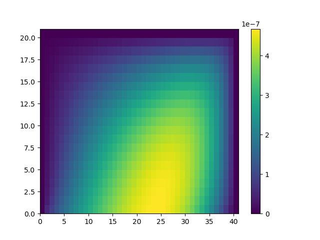

Heat Equation
The strong form of the initial/boundary-value problem of the heat equation is: given $f$, $u_0$, $q$, find $u:\bar\Omega\times [0,T]\rightarrow \mathbb{R}$ such that
\[\begin{aligned}
\rho\frac{\partial u}{\partial t} - \nabla\cdot(K\nabla u) &= f& \Omega\times (0,T)\\
u &= u_0 & \Gamma_D\times (0,T)\\
K\frac{\partial u}{\partial n} &= q& \Gamma_N\times (0,T)
\end{aligned}\]
The corresponding weak form is: given $f$, $u_0$ and $q$ , find $u$, such that for all $w$
\[\int_\Omega \rho\frac{\partial u}{\partial t}\delta u \mathrm{d}x + \int_\Omega K\nabla u \cdot \nabla \delta u \mathrm{d} x = \int_\Omega f\delta u \mathrm{d} x + \int_{\Gamma_N} q \delta u \mathrm{d}x\]
The computational domain is as follows: the top side is the inflow boundary condition and the other sides are Dirichlet boundary condition.
We consider the manufactured solution
\[u(x, t) = (x_1^2+x_2^2)e^{-t}\quad \rho(x) = (1+x_1^2+x_2^2)\]
and
\[K = \begin{bmatrix}
2 & 1 \\
1 & 2
\end{bmatrix}\]
Then we have
\[\begin{aligned}
f(x) &= -(1+x_1^2+x_2^2)(x_1^2+x_2^2) e^{-t} - 8 e^{-t}\\
q(x) &= -(2x+4y)e^{-t}
\end{aligned}\]
m = 40
n = 20
h = 0.01
bdedge = []
for i = 1:m
push!(bdedge, [i i+1])
end
bdedge = vcat(bdedge...)
bdnode = Int64[]
for j = 1:n+1
push!(bdnode, (j-1)*(m+1)+1)
push!(bdnode, (j-1)*(m+1)+m+1)
end
for i = 2:m
push!(bdnode, n*(m+1)+i)
end
ρ = eval_f_on_gauss_pts((x,y)->1+x^2+y^2, m, n, h)
M = compute_fem_mass_matrix1(ρ, m, n, h)
K_ = [2.0 1.0
1.0 2.0]
K = compute_fem_stiffness_matrix1(K_, m, n, h)
NT = 200
Δt = 1/NT
A = M/Δt+K
A, Abd = fem_impose_Dirichlet_boundary_condition1(A, bdnode, m, n, h)
U = zeros((m+1)*(n+1), NT+1)
for i = 1:m+1
for j = 1:n+1
x = (i-1)*h; y = (j-1)*h
U[(j-1)*(m+1)+i, 1] = x^2+y^2
end
end
for i = 1:NT
F = eval_f_on_gauss_pts((x,y)->(-(1+x^2+y^2)*(x^2+y^2)-8)*exp(-i*Δt), m, n, h)
F = compute_fem_source_term1(F, m, n, h)
T = eval_f_on_boundary_edge((x,y)->-(2*x+4*y)*exp(-i*Δt), bdedge, m, n, h)
T = compute_fem_flux_term1(T, bdedge, m, n, h)
rhs = F + M*U[:,i]/Δt + T
bdval = eval_f_on_boundary_node( (x,y)->(x^2+y^2)*exp(-i*Δt), bdnode, m, n, h)
rhs[bdnode] = bdval
U[:,i+1] = A\(
rhs - Abd*bdval
)
end
Uexact = zeros(n+1,m+1)
for j = 1:n+1
for i = 1:m+1
x = (i-1)*h; y = (j-1)*h
Uexact[j, i] = (x^2+y^2)*exp(-1)
end
end
pcolormesh(reshape(U[:,end], m+1, n+1)'-Uexact); colorbar()